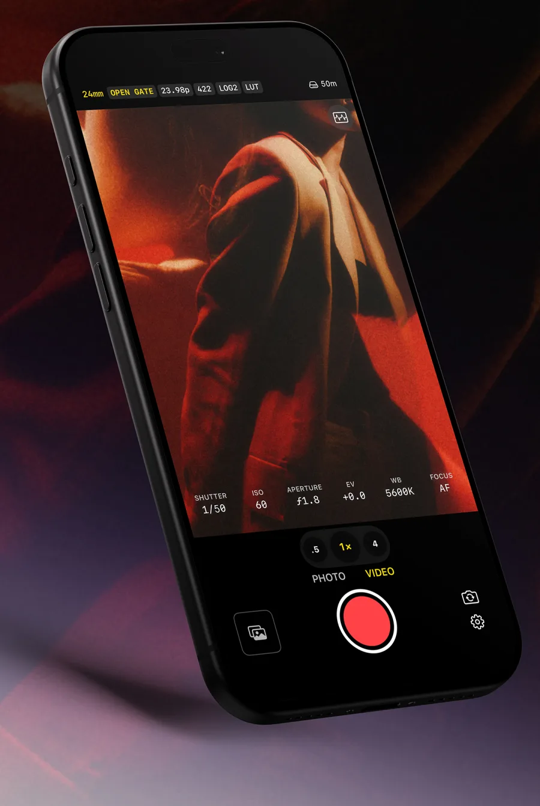
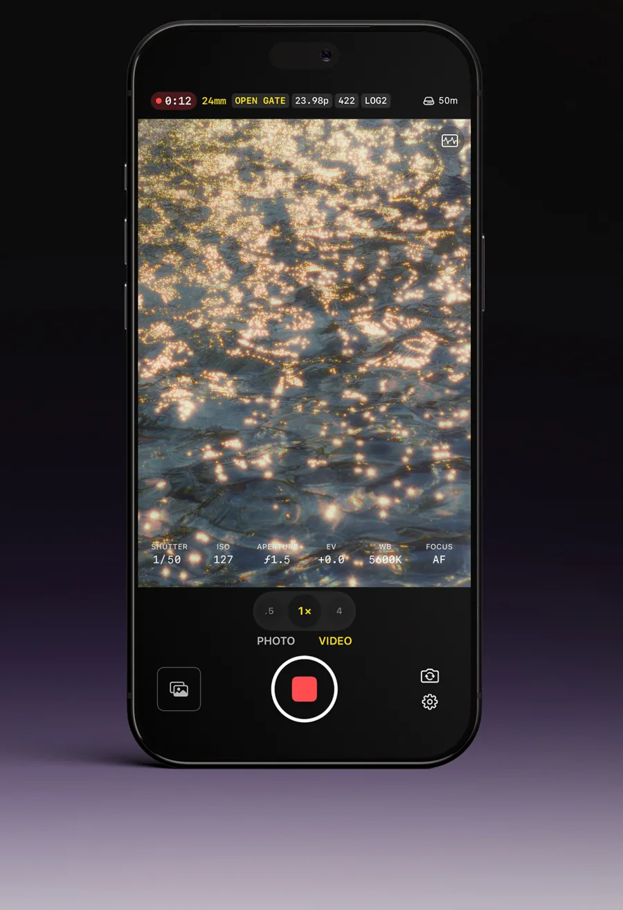
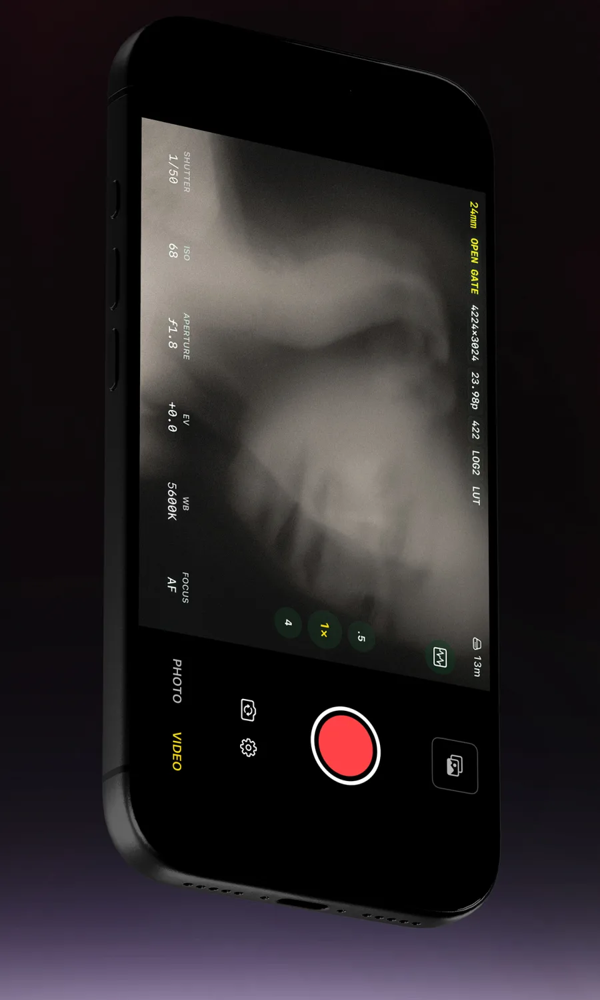
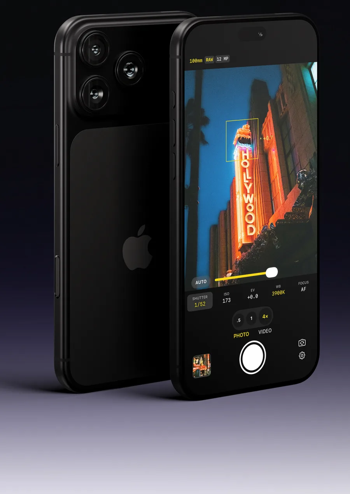

01 · VIDEO
Full sensor open gate recording
Every pixel the sensor sees, in Open Gate ProRes 422 with Apple Log 2, recorded straight to your iPhone. Plug in a drive for ProRes RAW.
Open gate on iPhone 17 Pro and later. Earlier iPhones record the full 4:3 frame.
02 · ONE CAMERA
RAW photo and video in one place
Switch between photo and video in a tap. Each mode remembers its own settings, so you're ready for the next shot.

03 · LOOKS
Your LUTs and built-in film looks
Pick a built-in film look or import your own .cube LUT. Watch it live in the viewfinder, or bake it straight into the file.

04 · PHOTO
Natural processing for film-like photos
Natural RAW captures a single frame with no computational processing, for a true film look. Apple ProRAW gives you clean, high-resolution detail.

Shoot like it's cinema
No accounts, no ads, no tracking. Rubin collects no data. Your footage stays yours.
- OPEN GATE
- PRORES 422 HQ
- PRORES RAW
- APPLE LOG 2
- 48 MP PRORAW
- .CUBE LUTS
- FALSE COLOUR
- FOCUS PEAKING